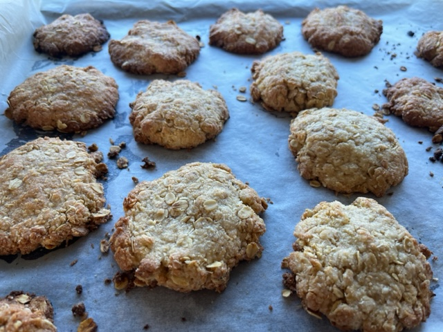

ANZAC Biscuits

Preheat oven to 180C. Line 2 baking trays with baking paper.
1 cupplain flour1 cupcoconut1 cuprolled oats1/2 cupcaster sugar1/4 cupbrown sugar
Place plain flour, coconut, rolled oats, caster sugar and brown sugar in a large bowl and stir with a wooden spoon to combine.
1/2 cupbutter2 tbspgolden syrup
Place butter and golden syrup in a small saucepan over low heat and cook, stirring occasionally, until butter is melted.
1 1/2 tbsboiling water1/2 tspbicarbonate of soda
Combine boiling water and bicarbonate of soda in a small bowl.
Add everything together and stir until well combined.
Roll tablespoonfuls of the mixture into balls and place on the lined trays, allowing space for spreading. Gently press each ball to flatten slightly.
Bake for 15 mins.